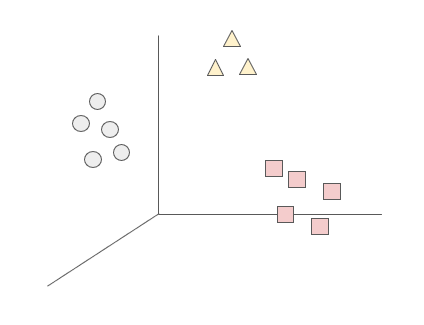

Unsupervised Learning
Introduction
During the last lecture we addressed supervised classification models in machine learning. The main characteristic of these methods is that we have a target variable we want to predict, based on features or predictors. When the target variable is continuous, we talk about regression problems, but when it’s a categorical variable, we talk about classification problems.
In this opportunity, we will discover a different type of machine learning methods: unsupervised learning. Unlike the supervised case, now we will not have a Y variable that we want to predict based on X features. We will only have a set of X features that are represented in a data space, from which we can extract relevant information. That is, we are not interested in being able to predict values, but rather finding interesting patterns in the data that can be inferred from the features.
There are mainly two types of problems that can be approached through unsupervised learning:
Dimensionality reduction: This refers to the process of finding combinations of features to replace the original ones, in order to reduce the dimension of the problem. In other words, to “rewrite” the data into fewer variables. This is often useful for the case of highly dimensional dataframes, where several variables are correlated. Dimensionality reduction is useful to compress information in order to reduce computational memory requirements, visualize data into more readable representations, and as input for other machine learning methods (such as classification or clustering).
Clustering: The goal of these type of algorithms is to find ‘similar’ cases. That is, to find groups within the observations that share similar values within the feature space. In this class, we will address different clustering methods.
Clustering
Overview
As explained before, clustering refers to a set of methods that aim to find subgroups of similar observations within the data. The goal of these methods is to partition the sample in a way that the observations within each group are quite similar to each other, while observations in different groups are quite different from each other (Hastie, Tibshirani, and Friedman 2009). However, what does it mean that observations are similar and different?

Broadly speaking, subgroups of similar data are those where the intra-cluster distance is minimized, and the inter-cluster distance is maximized. The observations in one group should be as homogeneous as possible, and the observations of different groups should be as heterogeneous as possible between each other. The measures to define similarity and difference are domain-specific considerations that should be taken into account by the knowledge of the data. We will now look into different approaches for clustering.
K-Means Clustering
Take a look at the following figure. It takes information from the Gapminder dataset and plots the relationship between GDP per capita and life expectancy for all the countries in 2007.
Based on this information, how many groups do you think you could make from these observations? And which criteria would you use to group them?
Intuitively, we might initially consider forming two distinct groups: one comprising countries characterized by both high life expectancy and a substantial GDP per capita, and another consisting of low-income nations with correspondingly low life expectancy. However, an alternative approach could involve categorizing our observations into three distinct groups, thereby introducing an additional cluster comprising middle-income countries with intermediate life expectancy. Determining the number of groups can be a subjective decision and can be tailored to the specific characteristics of the dataset; in essence, the possibilities are as diverse as the number of observations.
This conceptual framework underlies the fundamental principles of the k-means clustering algorithm. Operating on the basis of a predefined value for K (the number of clusters):
- Each observation is assigned to one of the K defined clusters.
- The clusters are mutually exclusive, ensuring that no observation is part of more than one cluster.
Now, how does this algorithm define which observation will belong into each cluster? How does it define the similarity between the subgroups? The k-means clustering algorithm does so minimizing within-cluster variation. The key metric for measuring this variation is the squared Euclidean distance1. For each cluster k, the within-cluster variation is computed as the sum of squared Euclidean distances between all pairs of observations within that cluster, divided by the total number of observations in that cluster.
The algorithm is guided by the goal of optimizing this within-cluster variation problem, seeking to minimize the following expression:
\[ \min_{C_{1},...,C_{k}} \left\{W(C_{k})=\frac{1}{|C_{k}|} \sum_{i,i^{'} \in C_{k}} \sum_{j=1}^p (x_{ij} - x_{i^{'}j})^2\right\} \]
Therefore, the goal of the algorithm is to find a method to partition the observations into K clusters that optimizes this problem, that is, that returns the smaller value of the within-cluster variation.
The algorithm has the following steps:
- Randomly assigns to each observation a value from 1 to K, based on the K defined clusters.
- Repeats until convergence:
- For each of the K clusters, computes the centroid. The kth cluster centroid is the p feature average (mean) for the observations in that cluster.
- Assign x to the nearest center (the closest one in terms of Euclidean distance).
- Recalculate the cluster centers as the mean of all data points assigned to each cluster.
- The algorithm converges to K clusters (more iterations do not change the result), each with its own center.
As the algorithm progresses, the obtained clustering continually improves, ensuring that the within-cluster distance is minimized. This iterative process leads to clusters with observations that are more similar to each other than to those in other clusters. When the result no longer changes, it means that the distance was optimized, a local optimum has been reached.

The k-means clustering method has several limitations that should be considered when applying it.
First, a significant challenge lies in the determination of the pre-defined number of clusters, K, which is often unknown. The algorithm’s effectiveness is sensitive to this parameter, and different values of K can lead to varied clustering outcomes. To address this, practitioners commonly iterate over different values of K and assess the clustering results to find the most suitable configuration.
Secondly, the algorithm is susceptible to converging to a local optimum rather than a global optimum. This sensitivity arises from the dependence on the initial random assignment of clusters in Step 1. To mitigate this, it is advisable to run the algorithm multiple times with different initial configurations, and then select the solution that yields the most favorable clustering results.
Additionally, k-means is constrained to continuous variables, as computing centroids relies on the mean of the p features of the data. Therefore, when dealing with categorical or non-continuous data, alternative clustering methods may be more appropriate2.
Moreover, the algorithm is highly sensitive to outliers, as the centroid is influenced by the mean of the features. Outliers can disproportionately impact the mean, leading to biased cluster centers. Preprocessing steps, such as outlier removal or transformation, may be necessary to enhance the robustness of the algorithm in the presence of outliers 3.
In summary, while k-means clustering is a valuable tool for partitioning data into clusters, users should be mindful of its sensitivity to the pre-defined number of clusters, the reliance on random initialization, and its suitability for continuous variables. Careful consideration and experimentation with different configurations are essential to obtain meaningful and reliable clustering results.
Hierarchical Clustering
Some of the limitations from the K-Means clustering can be overcome with another method: Hierarchical Clustering. The premise of this method is that we do not know the number of clusters before training the data, and we use a dendogram to get an overview and define the ideal K.
Interpreting the dendogram
The dendrogram is a tree-based graphical representation of the results of hierarchical clustering. It visualizes the hierarchy of clusters and the relationships between data points.
The upper figure illustrates a dendrogram. The X-axis represents individual data points in the dataset, while the Y-axis depicts the distances between data points or clusters. At the dendrogram’s bottom, each vertical line represents a single data point, essentially treating each as its own cluster. Moving up on the dendrogram, vertical lines merge into clusters, formed by grouping data points more similar to each other than to the rest of the data. The creation of a new cluster occurs where vertical lines merge into a horizontal line, with the height of the line reflecting the dissimilarity between the merging clusters.
To determine the number of clusters for analysis, a horizontal line is drawn across the dendrogram at a chosen height. The number of clusters corresponds to the intersections between this line and the vertical lines. The choice of the cutoff point depends on the desired level of granularity in clustering results. A higher cutoff yields fewer, larger clusters, while a lower cutoff results in more, smaller clusters.
After determining the number of clusters and the cutting point on the dendrogram, the resulting clusters are used in the analysis. Each data point is assigned to one of these clusters. For example, in the second figure, a cutoff at height 9 produces two clusters, depicted in pink and green. In the last image, a cutoff at level 5 leads to a split into three clusters, colored in pink, yellow, and green. This flexibility in choosing the cutoff allows for tailoring the clustering solution to the specific problem and the desired level of detail for the results.
Algorithm steps
The most common type of hierarchical clustering is the bottom-up and aglomerative clustering. It refers to the fact that the clusters will be grouped from the individual observations to larger groups. The general idea is that each observation will begin by being considered as an individual cluster. Then, the clusters that are closer to each other will be identified and merged into one larger cluster. This process will be iterated until all the observations are agglomerated into one cluster. Therefore, it adds up the clusters in each iteration.
How does the algorithm work?
Initialization: We start by considering that each data point is an individual cluster. In the beginning, we have N clusters, where N is the number of data points.
Similarity calculation: We compute the similarity matrix or distance between all pairs of clusters. There are several ways to measure similarity, such as Euclidean distance, Manhattan distance, cosine similarity, etc.
Cluster merging: The two most similar clusters are merged into one. The choice of which clusters to merge is based on the similarity matrix. This is repeated at each step until only one cluster remains.
Hierarchy construction: As the clusters are merged, a tree hierarchy (dendrogram) is constructed showing how the data are grouped at different levels of similarity. In the dendrogram, clusters are merged based on distance on the vertical axis.
Cluster selection: To determine the optimal number of clusters, you can examine the dendrogram and decide at which level of similarity you want to cut the tree. This will determine the number of clusters.
Dissimilarity measures
The algorithm for hierarchical clustering is straightforward, yet the choice of dissimilarity measurement and linkage methods plays a crucial role in shaping the resulting dendrogram and clusters. Unlike K-Means clustering, hierarchical clustering involves assessing dissimilarity when clusters contain multiple observations, achieved through different linkage methods. The selection of the linkage method significantly influences the clustering outcomes. Here are four common types of linkage methods:
The four most common types of linkage methods include:
Single Linkage (Minimum Linkage): Measures the distance between the closest pair of data points in two different clusters. It tends to produce elongated clusters and is sensitive to outliers.

Dhivya Complete Linkage (Maximum Linkage): Measures the distance between the farthest pair of data points in two different clusters. It tends to produce compact, spherical clusters and is less sensitive to outliers.

Dhivya Average Linkage (UPGMA - Unweighted Pair Group Method with Arithmetic Mean): Computes the average distance between all pairs of data points in two different clusters. It provides a balance between single and complete linkage, yielding relatively balanced clusters.
Centroid Linkage: Calculates the distance between the centroids (mean points) of two clusters. It can be computationally efficient but may not work well with clusters of irregular shapes.

Dhivya
The choice of linkage method depends on the characteristics of the data and the desired structure of the clusters. Each method has its advantages and limitations, making it essential to consider the nature of the dataset and the goals of the analysis when selecting an appropriate linkage method for hierarchical clustering. Experimentation with different methods is often necessary to determine the most suitable approach for a particular dataset and clustering objective.
Practical issues in clustering
Both K-Means and Hierarchical Clustering assign each observation to a cluster of similar data points. However, as researchers, it’s crucial to consider the following points when employing such methods:
Correlated Variables: Variables with high correlations may lead to the formation of clusters based on these correlations rather than capturing meaningful patterns in the data. Employing dimensionality reduction techniques, such as Principal Component Analysis (PCA), can help address this issue by transforming the data into uncorrelated variables.
High-Dimensional Datasets: High-dimensional datasets, characterized by a large number of variables, can pose challenges for clustering methods. The increased complexity may result in suboptimal clustering outcomes. It is advisable to explore dimensionality reduction techniques or feature selection to enhance the performance of clustering algorithms.
Outliers: Outliers have the potential to distort clustering results. Traditional clustering methods like K-Means and Hierarchical Clustering lack built-in mechanisms to robustly handle extreme values. Researchers may consider employing alternative clustering methods, such as Hierarchical DBSCAN4, which is more robust to outliers and density variations in data.
Variable Standardization: Clustering algorithms are sensitive to the scale of variables, and when variables have varying units of measurement, standardization becomes crucial. Failing to standardize may result in certain variables dominating the clustering process due to their larger units. Ensuring that all variables are on a similar scale through standardization helps to avoid this issue.
These considerations highlight the importance of preprocessing and understanding the characteristics of the data before applying clustering methods. By addressing issues related to correlated variables, high dimensionality, outliers, and variable scale, researchers can enhance the robustness and reliability of clustering results for more meaningful insights.
Discussion
It’s important to emphasize that clustering and unsupervised methods, in general, are not designed for predictive tasks. Instead, they serve to uncover patterns in data, such as identifying strong correlations among variables. This ability makes them valuable tools for revealing and representing disparities. Through clustering, we can unveil the co-occurrence and relationships among variables that may be obscured when treated as control factors, such as the connection between gender and income or occupation.
However, as previously mentioned, these methods do not involve predicting a target variable, and therefore, there’s no way to assess their performance. Consequently, there’s no fixed “ideal” outcome to strive for when creating clusters. These methods lack robustness and should not be used to draw causal interpretations. This doesn’t imply that the results are not valuable; rather, they should be approached critically. For instance, you can scrutinize the distribution of variables within each cluster and seek to understand the underlying reasons for the model’s grouping. Then, while they offer highly analytical and interpretative valuable insights, they have limited predictive utility.
References
Hastie, Trevor, Robert Tibshirani, and Jerome Friedman. 2009. The Elements of Statistical Learning. Springer Series in Statistics. New York, NY: Springer New York. https://doi.org/10.1007/978-0-387-84858-7.
Footnotes
The euclidean distance measures the distance between two points in a n-dimensional space. It is given by \(D = √((x2 - x1)^2 + (y2 - y1)^2 + (z2 - z1)^2 + ... + (xn - x1)^2)\)↩︎
The categorical variant for this algorithm is K-Modes clustering.↩︎
An alternative method to K-Means clustering that overcomes this limitation is its variant K-Medoids. K-Medoids is similar to K-Means in that it aims to partition a dataset into K clusters, but it represents the cluster centers not by the mean but by the medoid of the cluster. It also outperforms K-Means by taking into account categorical variables. However, it is computationally more expensive than the K-Means algorithm.↩︎
Hierarchical DBSCAN (Density-Based Spatial Clustering of Applications with Noise) is a variation of the DBSCAN clustering algorithm that organizes clusters in a hierarchical or tree-like structure rather than identifying clusters as separate, non-overlapping groups.↩︎